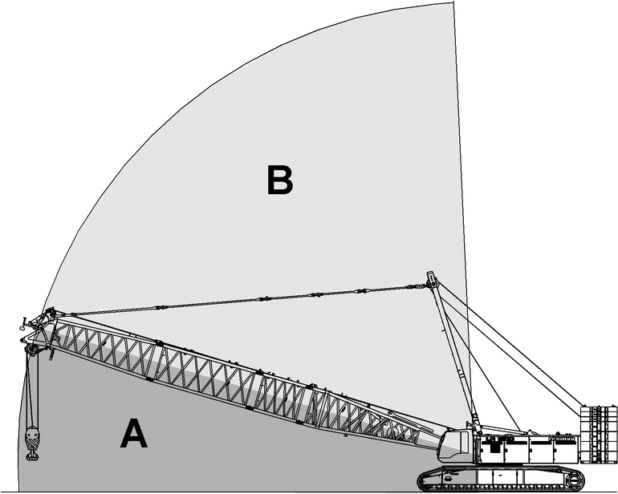

Lastmomentbegrenzung Selbstblockade

GEFAHR
Nicht bestimmungsgemäße Verwendung der Funktion „Lastmomentbegrenzung Selbstblockade“!
Kippen der Maschine, Versagen der Struktur.
Funktion „Lastmomentbegrenzung Selbstblockade“ ausschließlich verwenden, um Maschine aus einer Selbstblockade (Deadlock) zu bringen. |

Beim Drücken der Taste Lastmomentbegrenzung Montage oder Selbstblockade am Steuerpult X23 entscheidet die Lastmomentbegrenzung nach der aktuellen Geometrie der Maschine, welche Funktion aktiv wird. Wenn für die aktuelle Geometrie keine Traglasttabelle existiert, wird die Funktion „Lastmomentbegrenzung Montage“ aktiv (Weitere Informationen siehe: „Auf- und Abbau“). Wenn für die aktuelle Geometrie eine Traglasttabelle existiert, wird die Funktion „Lastmomentbegrenzung Selbstblockade“ aktiv.

Fig. 3377: Schematische Darstellung: Geometrie der Maschine innerhalb und außerhalb der Traglasttabelle
Beispiel für eine Selbstblockade (Deadlock): Eine Last wird nahe am maximal zulässigen Lastmoment von einer großen Höhe gesenkt. Die zunehmende Seilmasse zwischen Unterflasche und Auslegerkopf erhöht das Lastmoment und führt zu einem Lastmomentbegrenzungs-Stopp und in weiterer Folge zu einer Selbstblockade, da folgende Bewegungen gesperrt werden:
– | Seil von Winde1 abspulen (ab 105% Auslastung). |
– | Seil von Winde2 abspulen (ab 105% Auslastung). |
– | Seil auf Winde1 aufspulen. |
– | Seil auf Winde2 aufspulen. |
– | Hauptausleger senken. |
– | Hauptausleger heben (ab 105% Auslastung). |
– | Nadelausleger senken. |
– | Nadelausleger heben (ab 105% Auslastung). |
Mit der Funktion „Lastmomentbegrenzung Selbstblockade“ sind wieder alle Bewegungen bis 105% Auslastung des maximal zulässigen Lastmoments freigegeben (Hauptausleger und/oder Nadelausleger heben bis 110% Auslastung, Seil von Winde1 und/oder Seil von Winde2 abspulen ohne Lastmomentbegrenzung). Bei Maschinen mit einer CE-Traglasttabelle sind die Geschwindigkeiten der Bewegungen reduziert.
Sicherstellen, dass folgende Voraussetzungen erfüllt sind:
❑ | Lastmomentbegrenzung funktioniert einwandfrei. |
❑ | Bedienhebel sind in Nullstellung. |
Taste Lastmomentbegrenzung Montage oder Selbstblockade am Steuerpult X23 drücken. |
Für die aktuelle Geometrie der Maschine existiert eine Traglasttabelle:
Funktion „Lastmomentbegrenzung Selbstblockade“ ist aktiv. | |
LED an Taste Lastmomentbegrenzung Montage oder Selbstblockade leuchtet. | |
„Seil von Winde1 abspulen“ ist ohne Lastmomentbegrenzung möglich. | |
„Seil von Winde2 abspulen“ ist ohne Lastmomentbegrenzung möglich. | |
„Hauptausleger heben“ ist bis 110% Auslastung des maximal zulässigen Lastmoments möglich. | |
„Nadelausleger heben“ ist bis 110% Auslastung des maximal zulässigen Lastmoments möglich. | |
Alle anderen zuvor gesperrten Maschinenbewegungen sind bis 105% Auslastung des maximal zulässigen Lastmoments möglich. | |
Geschwindigkeiten der Maschinenbewegungen (Seil auf Winde1 aufspulen und von Winde1 abspulen, Seil auf Winde2 aufspulen und von Winde2 abspulen, Hauptausleger heben und senken, Nadelausleger heben und senken, Seil auf Hilfswinde aufspulen und von Hilfswinde abspulen, Drehwerk nach links und rechts) sind auf 15% reduziert. | |
Fahrwerk ist auf Geschwindigkeitsstufe eins reduziert. | |
Lastmomentbegrenzungs-Leuchten leuchten orange. | |
Anzeige Lastmomentbegrenzung Warnung wird am Bildschirm eingeblendet: |

Anzeige Datenaufzeichnung aktiv wird am Bildschirm eingeblendet: |

Die Funktion „Lastmomentbegrenzung Selbstblockade“ wird unter folgenden Bedingungen deaktiviert:
– | Für die aktuelle Geometrie der Maschine existiert keine Traglasttabelle. |
– | Lastmomentbegrenzung funktioniert nicht einwandfrei. |
– | Maschinenbediener fährt länger als 10 Sekunden keine Bewegung mit der Maschine. |
– | Motor ist ausgeschaltet und 10 Sekunden sind vergangen. |
– | Maschinenbediener betätigt den Schlüsselschalter Lastmomentbegrenzung Abschaltung. |
– | Maschinenbediener drückt die Taste Lastmomentbegrenzung Montage oder Selbstblockade am Steuerpult X23. |
Taste Lastmomentbegrenzung Montage oder Selbstblockade am Steuerpult X23 drücken. |
Funktion „Lastmomentbegrenzung Selbstblockade“ ist deaktiviert. |
LED an Taste Lastmomentbegrenzung Montage oder Selbstblockade erlischt. |
Lastmomentbegrenzung ist aktiv. |
Lastmomentbegrenzungs-Leuchten leuchten je nach aktuellem Status der Lastmomentbegrenzung. |
Anzeige Datenaufzeichnung aktiv wird am Bildschirm ausgeblendet. |